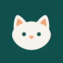

Amount & source
ReadingZero means zero. Missing means unavailable. A timestamp is part of the number's meaning.

The KittyInteraction labWednesday, 4 November · Demo snapshot
Your everyday money, with the details close at hand.
Ask is available in the Ready specimen only. Source gaps and stale data must be resolved before acting on these examples.
Move cards using the arrows or drag their handles. Compact / wide changes desktop width; all cards stack on a phone. Only layout preferences are saved.
New data should make your overview more useful, not more crowded.
Patterns that carry their meaning
These building blocks are reusable. Domains remain optional; importing a file never grants a new permission.
Zero means zero. Missing means unavailable. A timestamp is part of the number's meaning.
Keep payment status, review status and source freshness separate. “Posted” does not mean “reconciled”.
Which everyday category is largest? Horizontal bars support comparison. Values remain available as text.
| Category | Amount (AUD) |
|---|---|
| Groceries | $640.00 |
| Transport | $180.00 |
| Dining | $120.00 |
One short acknowledgement after verified persistence. The text is the feedback; movement is optional.
This is a motion specimen; no data is saved.
Designed to grow, off by default
Each extends the same provenance, review and transaction patterns. These examples are contracts, not live calculations.